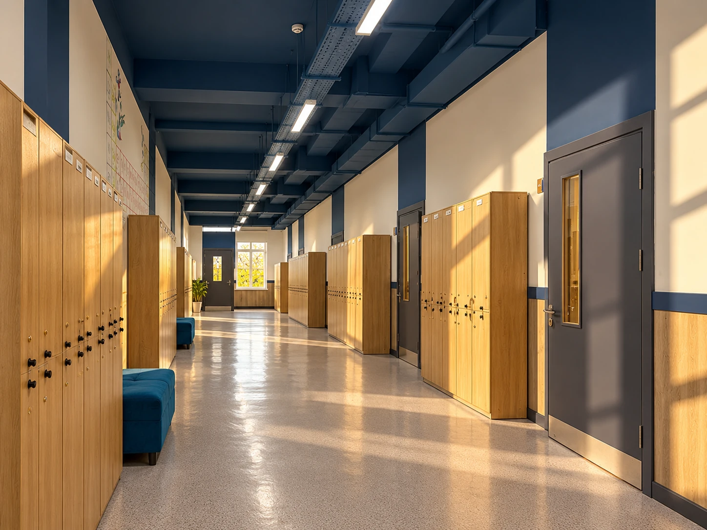
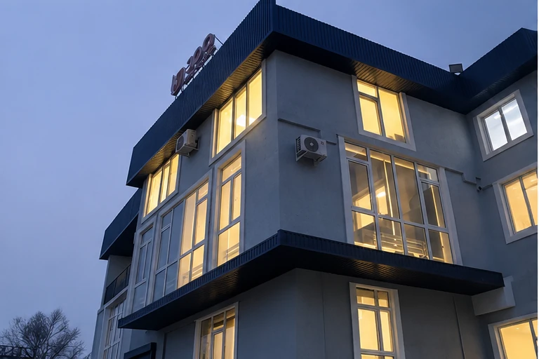
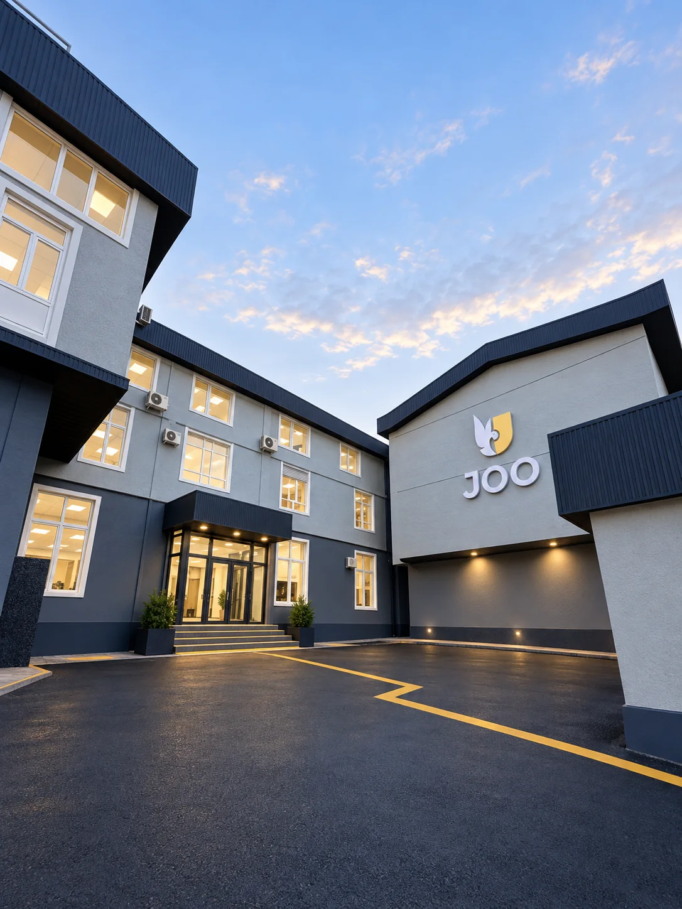
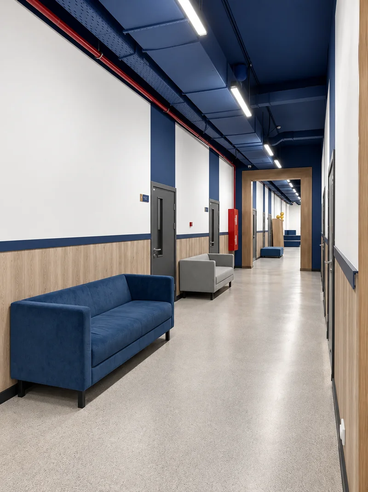
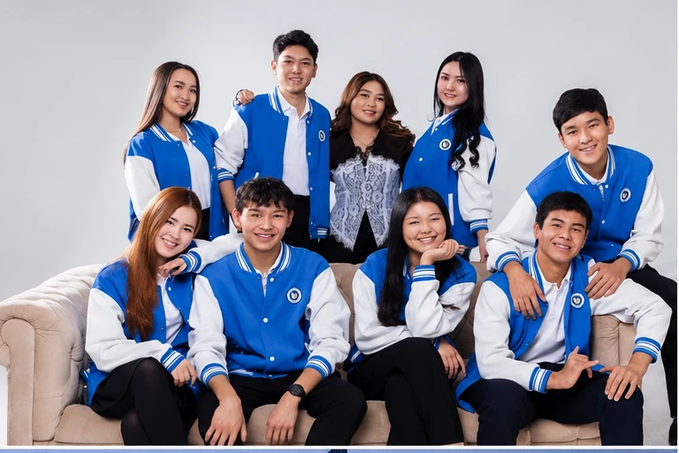
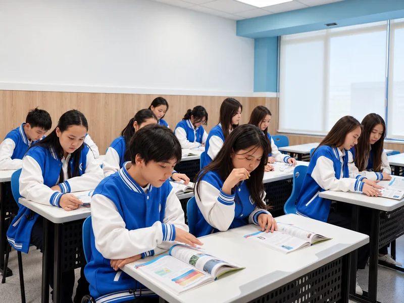
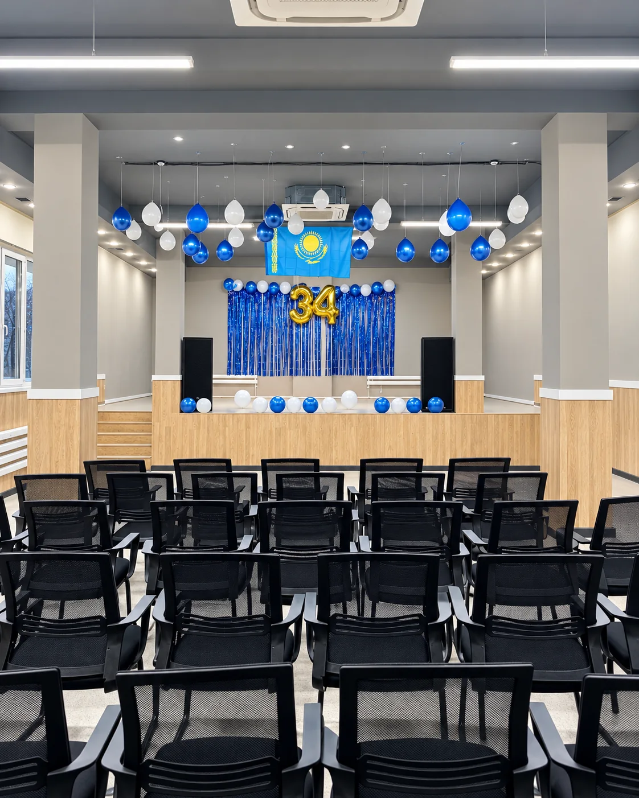
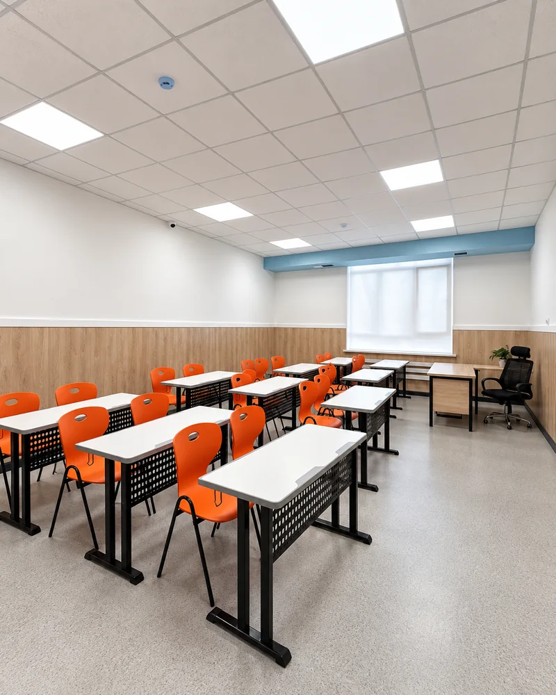
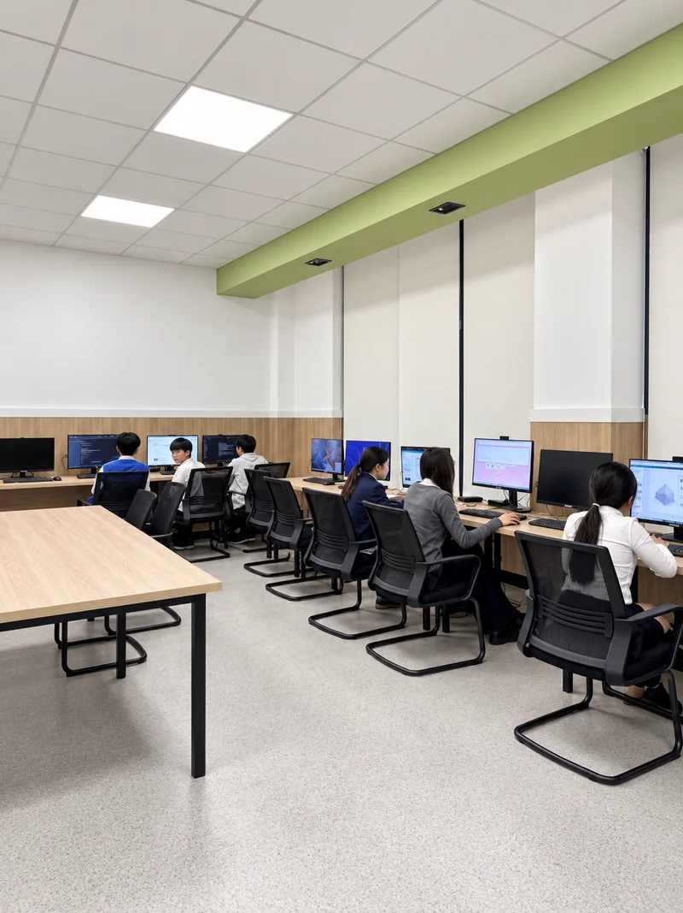

КЕҢІСТІК ТЕ ҮЙРЕТЕДІ.
Сыныптар, зертхана, ортақ кеңістіктер — мектепті жақыннан көр.
БІР КАМПУС. БІРНЕШЕ РЕЖИМ.
Кампус оқушының бір күндегі әртүрлі қажеттіліктерін — сабақ, зерттеу, технология, жеке фокус, топтық жұмыс және демалысты — бір логикаға біріктіреді.

01JOO AUEZOV / CAMPUSМЕКТЕПТІ КАДРМЕН ТАНЫ.
Төмендегі дөңгелек фотоларды басып, мектеп кеңістігін таңда. Сурет бірден ауысады — фотолар анық, ешқандай blur жоқ.


МЕКТЕПТІҢ КЕҢІСТІГІН СЕЗІН.
Скролл жаса — әр сурет келесі кеңістікті ашады.




КАМПУСТЫ КАДРМЕН ЗЕРТТЕ.
Осы бағытты мектептегі тәжірибе арқылы тереңірек таны.
САБАҚ БІР ҒАНА ФОРМАТ ЕМЕС.
Әртүрлі тапсырмаға әртүрлі орта қажет: түсіндіру, талқылау, цифрлық практика, зерттеу және презентация.

03JOO AUEZOV / CAMPUSКІТАПХАНА — ТЫНЫШ ФОКУС НҮКТЕСІ.
JOO Auezov кампусында кітапхана бар. Бұл бөлімді біз тек кітап сақтайтын орын ретінде емес, оқу, зерттеу, жеке дайындық және материалмен терең жұмыс жасауға арналған орта ретінде көрсетеміз.

04JOO AUEZOV / CAMPUSДЕМАЛЫС ТА — КҮННІҢ БІР БӨЛІГІ.
Кампус құрамындағы chill zone сабақ арасындағы қысқа үзіліс, достармен сөйлесу және келесі оқу блогына ауысу үшін арналған әлеуметтік кеңістік ретінде көрсетіледі.
МЕКТЕП — ЖЕКЕ КАБИНЕТТЕР ЖИЫНТЫҒЫ ЕМЕС.
Ортақ кеңістіктер оқушыны тек сабаққа емес, бір-бірімен сөйлесуге, презентация жасауға, іс-шара өткізуге және мектеп қауымдастығының бөлігі болуға шақырады.
ЖАҚСЫ ОРТА КЕДЕРГІНІ АЗАЙТАДЫ.
Кампус туралы коммуникацияда біз тек расталған кеңістіктерді және жалпы оқу ортасының қағидаларын көрсетеміз. Нақты қауіпсіздік технологиялары мен ішкі регламенттерді мектеп экскурсиясында нақтылаған дұрыс.